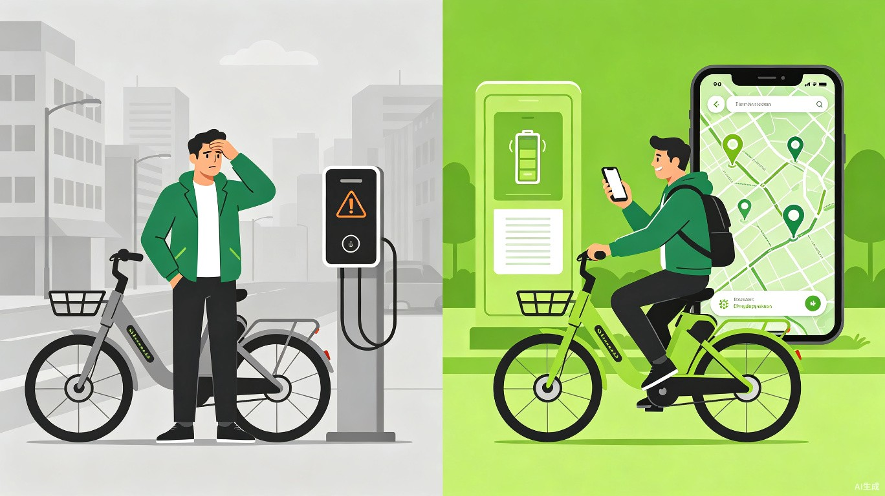
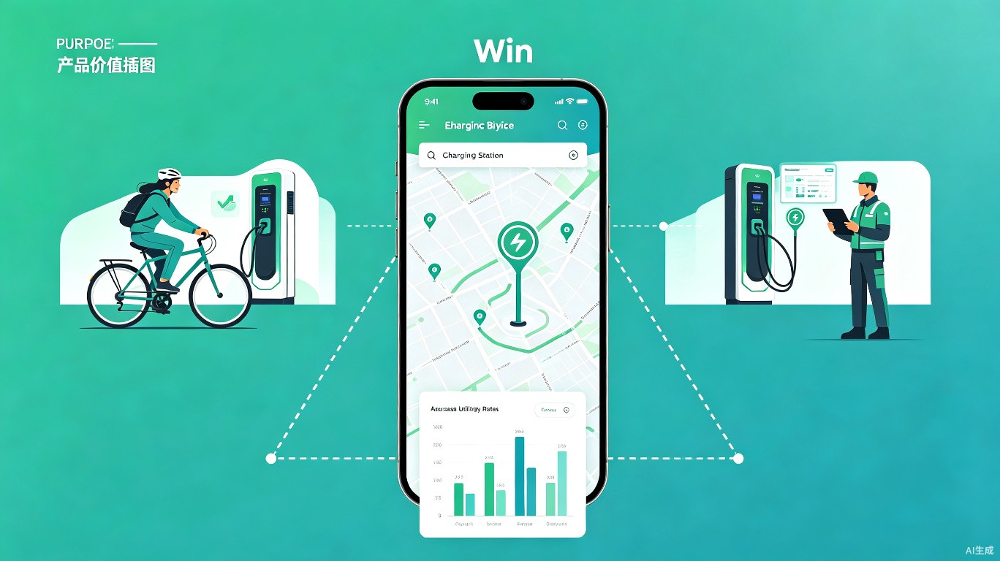

电桩易寻
电动自行车智能充电桩查询与导航小程序 — 让充电不再焦虑，让出行更加从容
1创意概述
基于真实生活痛点出发，打造一款让电动自行车用户告别"充电焦虑"的实用工具。
想解决什么问题
解决电动自行车用户在出行过程中找充电桩难的核心痛点。当前用户只能凭经验或四处寻找充电桩，缺乏一个实时查询充电桩状态的便捷平台。
为什么会想到做这个
在生活中经常碰到电动车电量告急，却只能按经验去找充电桩。到了现场才发现充电桩不可用、已被占用或已经损坏，时间和精力的双重浪费激发了做这个产品的想法。
产品形态
一款微信小程序，无需下载安装，即用即走。用户打开小程序即可自动定位，查看附近充电桩的实时状态（空闲/占用/故障），一键导航前往充电。
2目标用户及痛点
深入理解用户是谁、在什么场景下使用、当前面临哪些困扰。
核心用户：电动自行车日常使用者
通勤上班族、外卖配送员、短途出行市民等依赖电动自行车作为主要代步工具的人群。
使用场景
当前三大核心痛点
找充电桩难
城市充电桩分布不透明，用户缺乏统一查询渠道，只能凭经验或碰运气寻找，效率极低。
到了才发现不可用
千辛万苦找到充电桩，却发现已经被占用、充电口损坏或设备离线，无功而返。
设备状态不透明
充电桩是否故障、是否兼容自己的车型、收费标准如何，这些信息在到达现场前完全未知。

3价值与意义
连接供需两端，创造多方共赢的绿色出行生态价值。
供应商价值
协助充电桩供应商高效运维充电桩，通过实时状态监控和故障上报，减轻运营成本，提升设备维护响应速度。
用户价值
方便用户快速找到可用充电桩，减少寻桩时间成本和电量焦虑，提升日常出行体验和效率。
社会价值
高效增加充电桩的使用率，避免资源闲置，实现城市充电基础设施的高效利用，助力绿色低碳出行。

核心价值主张：通过实时数据连接充电桩与用户，让每一次充电都精准、高效、无焦虑，推动城市绿色出行基础设施的数字化升级。
4产品功能与使用流程
轻量化设计，核心功能聚焦，让用户三步完成"找桩-导航-充电"。
核心功能模块
-
✓
附近桩点地图 — 基于LBS定位，自动展示周边充电桩分布，不同颜色标识空闲（绿色）、占用（橙色）、故障（灰色）状态
-
✓
实时状态查询 — 显示充电桩当前使用状态、接口类型、收费标准、剩余可用时间
-
✓
一键导航 — 集成地图导航能力，支持步行/骑行路线规划，精准引导至目标桩点
-
✓
故障上报 — 用户可现场上报充电桩故障，帮助运营商及时维护
-
✓
充电记录 — 个人充电历史、消费统计、常去桩点收藏
用户使用流程
flowchart LR
A[打开小程序] --> B[自动定位]
B --> C[查看附近充电桩]
C --> D{桩点可用?}
D -->|是| E[查看详情与导航]
D -->|否| F[筛选其他桩点]
F --> C
E --> G[导航前往]
G --> H[扫码充电]
H --> I[充电完成支付]
技术实现要点
微信小程序端
基于微信小程序框架开发，利用微信内置地图SDK实现定位与导航，无需额外安装，降低用户使用门槛。
充电桩数据接入
与充电桩运营商系统对接，实时获取设备状态数据；支持IoT直连模式，确保状态信息准确及时。
数据安全与稳定性
采用云端架构保障高并发访问，数据加密传输，确保用户隐私与支付安全。